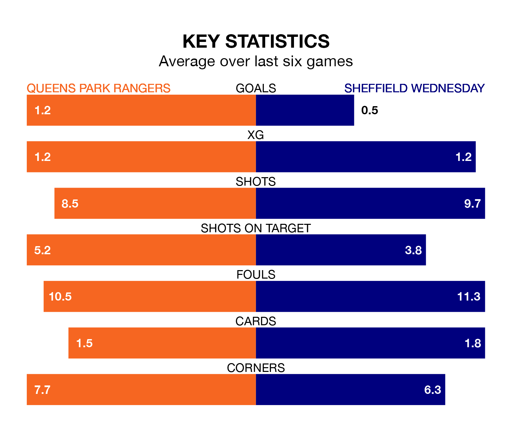

Queens Park Rangers host Sheffield Wednesday on Saturday at Loftus Road in EFL Championship.
In their last league match, on Monday, QPR beat Swansea City 1-0 away, with their goal scored by Steve Cook.
Wednesday lost, 2-0 away at Middlesbrough.
Wednesday are 23rd in the table after 40 games, of which they have won 11 and drawn six, earning 39 points.
QPR are seven places ahead of the Owls in 16th, with 12 wins and 10 draws putting them on 46 points.
In the last 10 years, QPR and Wednesday have played each other on 14 occasions. They won five each, and they drew four times.
On average, QPR scored 1.5 goals and the Owls 1.3 in those matches.
Their last meeting was on December 16, when Wednesday won 2-1 at home.
In Asmir Begović, Rangers can rely on one of the league's safest pair of hands. He has kept 11 clean sheets in his 40 appearances this season in EFL Championship.
In the visitors' net, James Beadle has five clean sheets in 13 games. He has conceded a goal every 62 minutes, 20% more often than the 73 minutes between goals for Begović.
The home side are in reasonable form in EFL Championship, with three wins and two draws from their last six games.
With two wins and a draw over that period, Wednesday's form is worse – they have taken seven points from 18, compared to QPR's 11.
With 31 goals in 40 games so far this season, Wednesday are the league's lowest scorers with 0.8 goals per game. And they are conceding more than average, letting in 64 goals at a rate of 1.6 per game.
QPR are also below average scorers, with 1.0 goal per game, compared to a league average of 1.4. They have conceded 1.3 goals per game.
Saturday's match will be refereed by Graham Scott, who has taken charge of nine EFL Championship games so far this season, issuing three red cards and booking 43 players. He has awarded two penalties.
He is yet to oversee a match featuring either QPR or Wednesday this season.
Updated: 16:41 (UTC), 04/04/24